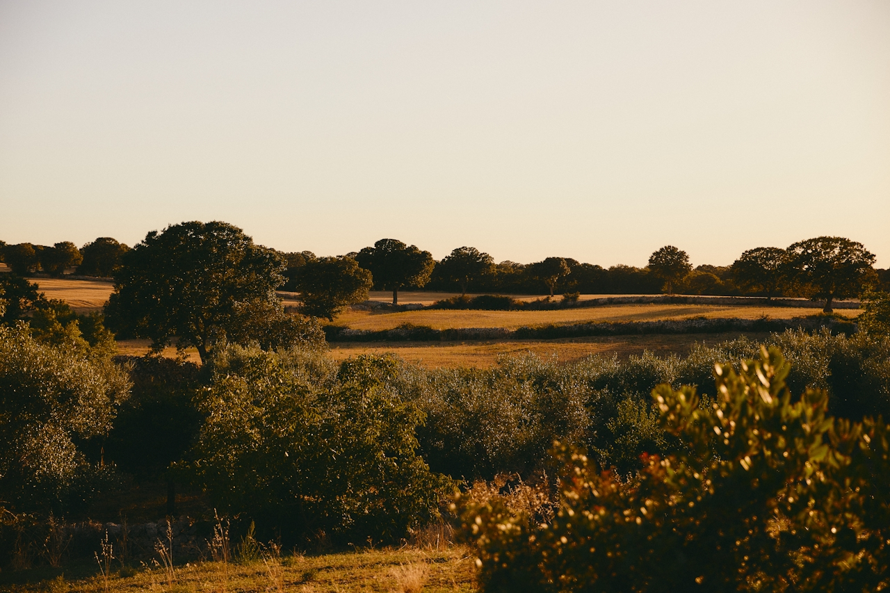

For public agencies and nonprofits in health, climate and housing
Making the Invisible Visible
For the ones who’ve built their careers around serving communities, and can feel what gets lost between what people say and what gets decided. Together, we name the invisible rules behind that loss, and practice justice in the everyday choices that seem too small to matter.

Who this is for
You speak the institution’s language. And you’re questioning what gets lost in translation.
You’ve been doing this work for years, and it has carried a lot of good. You also know the moments that don’t make it into the report: the neighbor’s story that lost its context on the way into the plan, the priority everyone agreed on that never received a budget, the trust you built with a community that ended when the project did.
We help you bring the care and commitment that drew you to this work into how you plan, work together and make decisions, so what communities know, need and imagine can shape more of what happens next. Bring your rigor and your care, your evidence and the knowledge that lives in experience, relationship and community. There’s room for all of it here.
A note from Andréanne
I’m Andréanne Chu, founder of ACBC Studio. I’ve spent years working in and alongside governments, coalitions and nonprofits, and I keep coming back to the same question: even when we invite communities to shape priorities, why does the power to act on them so rarely move? It’s a question I ask of my own work as much as anyone’s.
I don’t have every answer. But I’ve come to believe another way is possible, and that we find it by practicing it together. ACBC grew from that hope.
Read my storyWays we can (un)learn together
Wherever you are in the work, there’s a place to begin, each shaped around a different part of the unlearning. And each one leaves the learning, the relationships and the know-how with your team.
-

Un-Learning Series
The part of community engagement your degree didn’t teach.
-

Sensemaking Tools
For when you’re holding too much to see the way.
-

Wayfinding Partnership
For when you’ve started working differently, and it’s hard to hold.
Every stretch of work is different, and each asks something different of us. Let’s talk through what yours needs most.
In their words
“They were with me in every stage.”
“Her empathy helped turn research relationships with community groups into shared partnerships.”
“We grounded our strategic planning in what community members actually told us.”

Let’s stay connected
If something here spoke to you, come say hello. I’d love to hear what you’re working through and what you hope could be different.
With love + solidarity,Andréanne Chu
Or send a note to hello@acbc-studio.com.
Letters from the In‑Between
Reflections on how we practice, and what we’re working toward, in health, housing and climate.
Occasional letters for those of us working inside institutions and dreaming of what they could become: what I'm noticing, learning and wrestling with, questions to bring into your own work, and the thinkers and traditions I'm learning from.